✦ 生成藝術・親子工作坊 ✦
用一支圓規、一把直尺和幾條規則，
一步一步「長」出屬於自己的圖形宇宙！
這是一堂用規則來創作的有趣實驗。
我們會自己設定畫圖的規則——像是重複、對稱、條件變化，慢慢組合出屬於自己的「圖形宇宙」。
這叫做生成藝術：先訂好規則，再讓作品自然長出來，就像藝術家 Sol LeWitt 做的一樣。
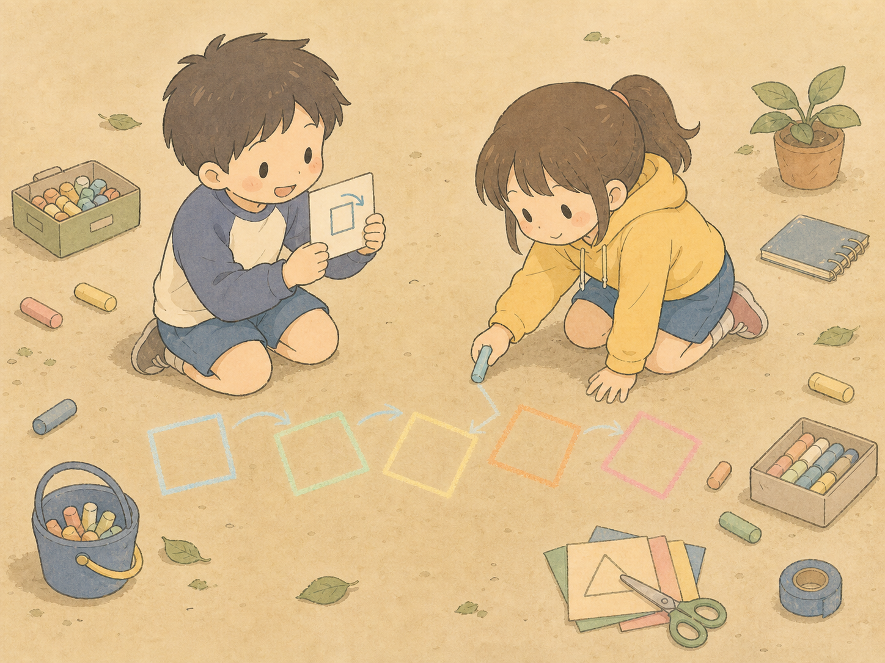
我們從最簡單的線條和圓開始，認識魔法陣和伊斯蘭幾何裡藏著的美感與秩序。
用尺和圓規畫圖，其實就是在照著規則，一步一步把圖案「建構」出來——就像在解謎一樣，一步接一步！
她是一位 1924 年出生在匈牙利、住在法國巴黎的藝術家（1924–2023）。
很久以前，當電腦還是大大一台的時候，她就開始用電腦＋規則來畫畫，是生成藝術的開創者！
迴圈（Loop）就是「重複做同一件事」。
例如規則是：
「畫一個方塊 → 往右移一點 → 再畫一個」
重複 8 次，就排出一整排！
遞迴（Recursion）就是「自己裡面，還有一個小小的自己」。
像俄羅斯娃娃：打開一個，裡面還有更小的一個，一直下去 🪆
畫畫也一樣：大方塊裡畫小方塊，小方塊裡再畫更小的……或像一棵大樹，樹枝上長出小樹枝，小樹枝又長更小的！
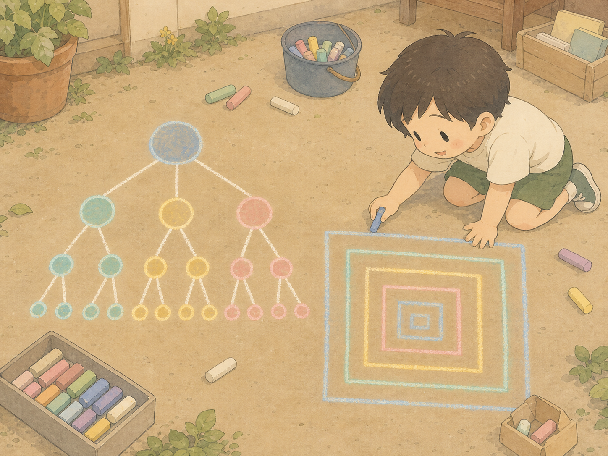
| 時間 | 項目 | 場地 |
|---|---|---|
| 45 分鐘 | 認識生成藝術 ＋ 操作講解 › | 教室・用桌椅 🪑 |
| 105 分鐘 | 工作坊操作・動手創作 › | 教室・地板創作 🧎 |
快速跳到：
你在哪裡看過星星呢？
今天，星星就是我們的主角！
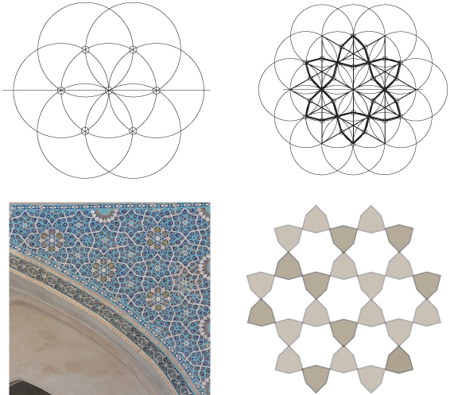
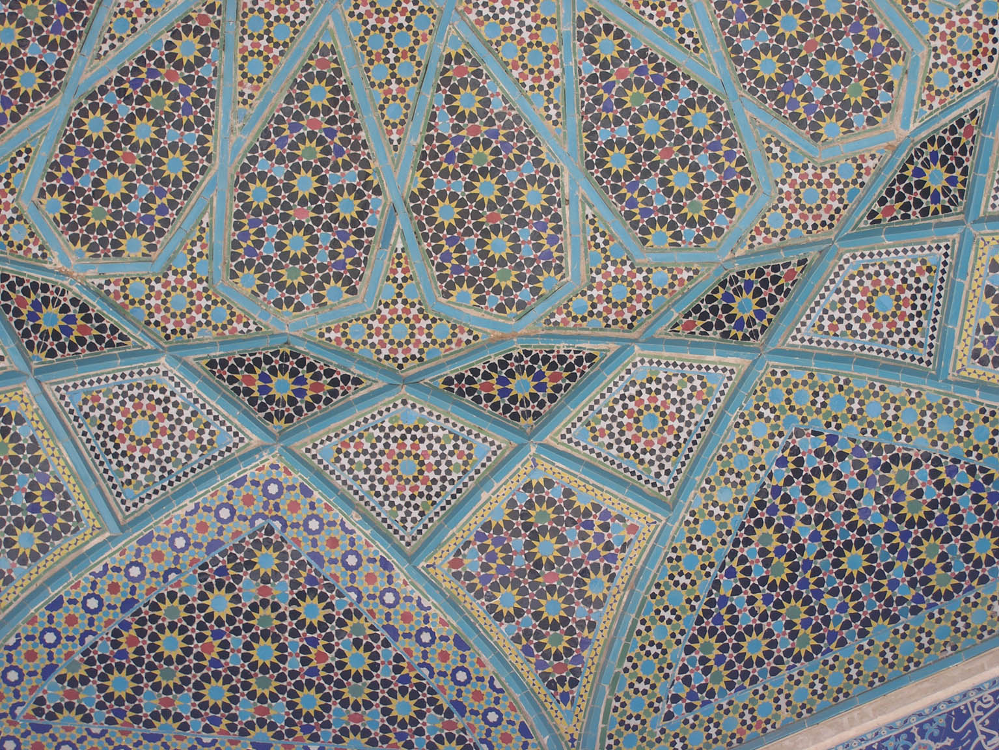
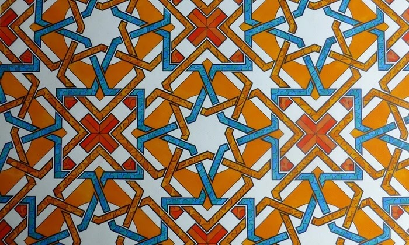
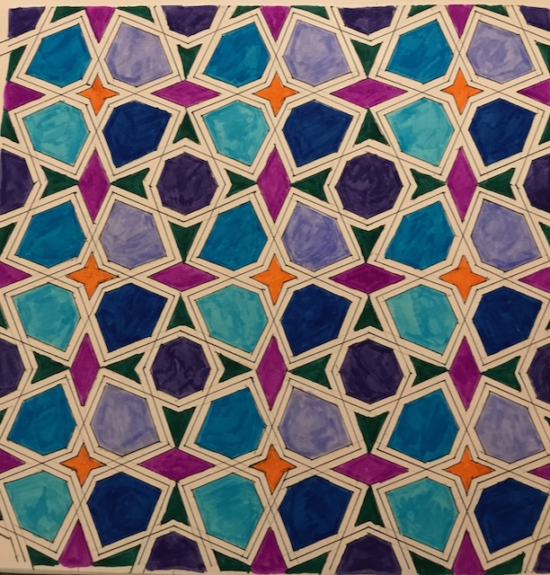
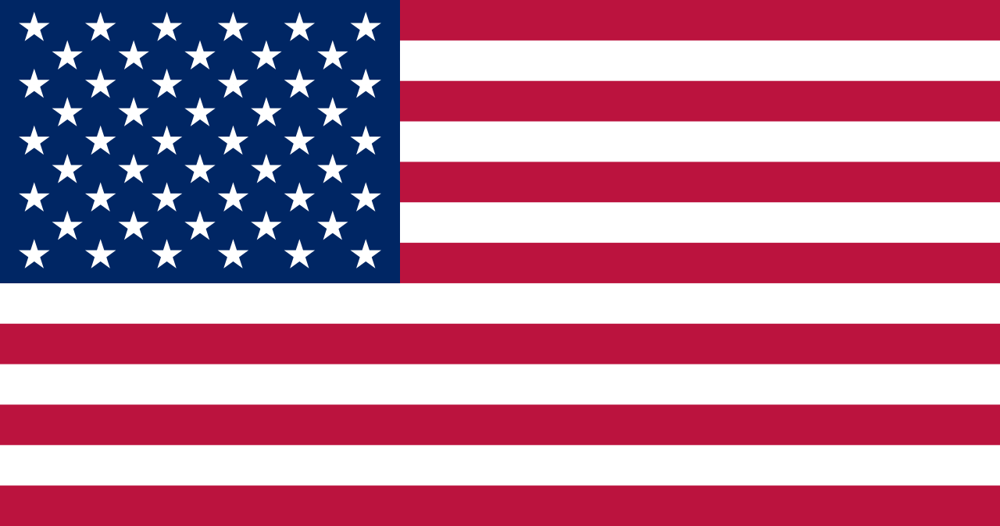
五芒星如果尖角朝下、兩個角朝上，就叫做「倒五芒星」。
在很多動漫、電玩和故事裡，倒五芒星常常被畫成「魔法陣」的圖案——主角踩在上面唸咒語，就能召喚生物或施展魔法 ✨
例如召喚惡魔、變身、開啟結界……都很愛用這個符號，因為它看起來神祕又有點危險。
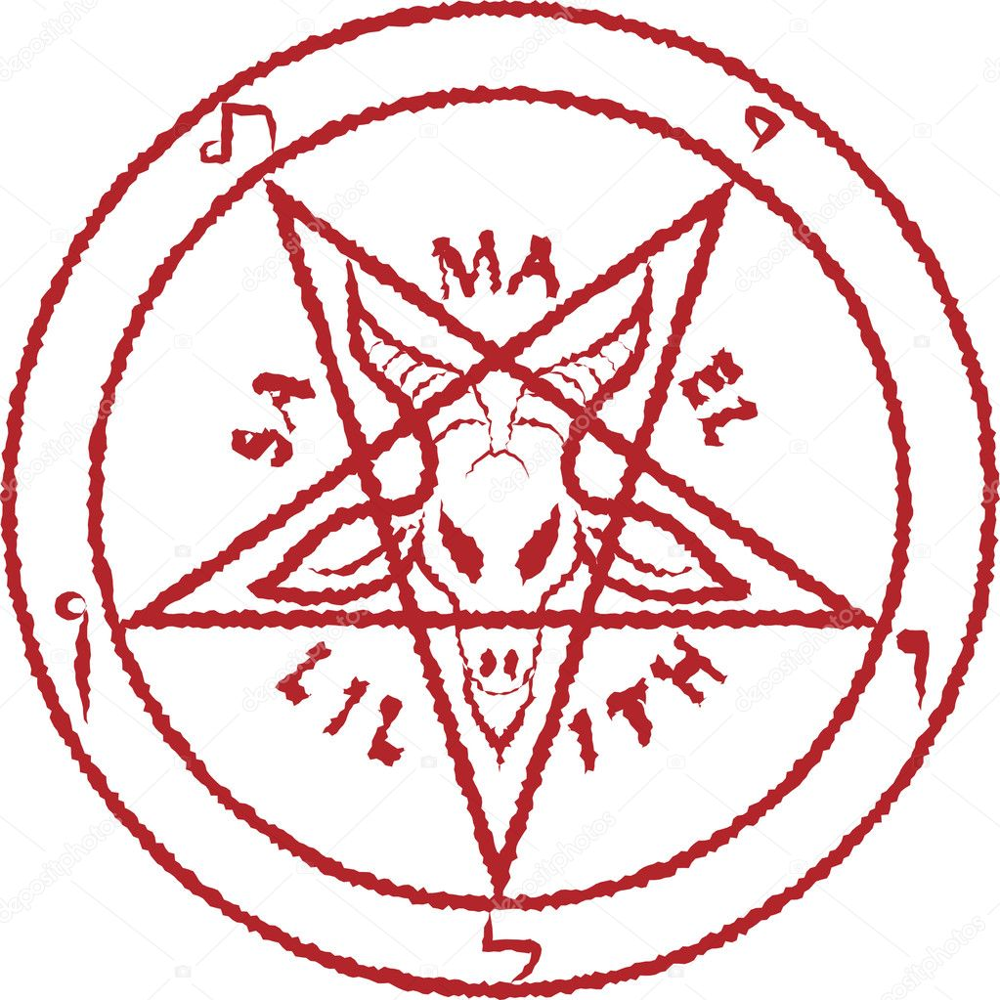
很久很久以前，有一位很有智慧的國王，叫做所羅門王。
傳說他有一個神奇的印章，上面就是六角星，大家叫它「所羅門之印」。
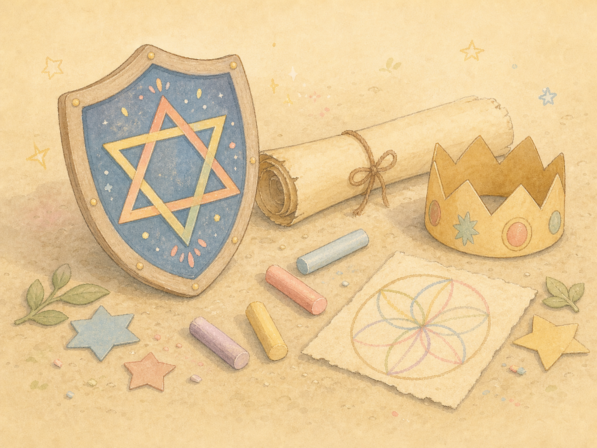
同樣是這個六角星，在猶太文化裡叫做「大衛之星」。
它出現在以色列的國旗正中間——藍白條紋，加上中央的六角星。
還有一種大家最熟悉的星星——五芒星，五個角，一筆就能畫完！
古希臘有位數學家畢達哥拉斯，他發現五芒星裡藏著神奇的黃金比例。
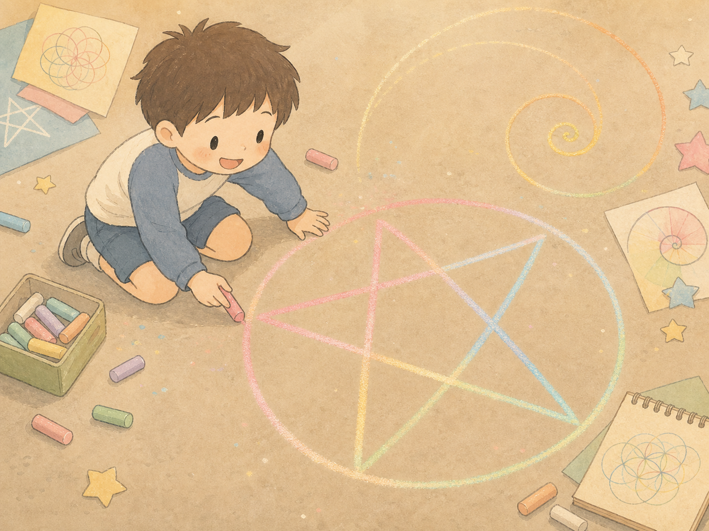
除了五芒星和六角星，星星還能有更多角——每一種都有自己的故事。
八角星（八芒星）
兩個正方形交疊轉一下。伊斯蘭花磚最常見，也是指南針上的「羅盤玫瑰」，幫旅人指方向 🧭
七角星
七個角很難平分，自古帶點神祕。出現在約旦國旗（古蘭經第一章的七節經文）和澳洲國旗的「聯邦之星」上 🚩
十二角星
像一片雪花 ❄️ 清真寺的牆面常用它和別的星星，重複拼成滿滿一整片美麗花磚。
原來這些美麗的星星，
全都能用一支圓規畫出來！
準備好圓規，我們開始動手吧！ ✏️
畫圖的三個好朋友：
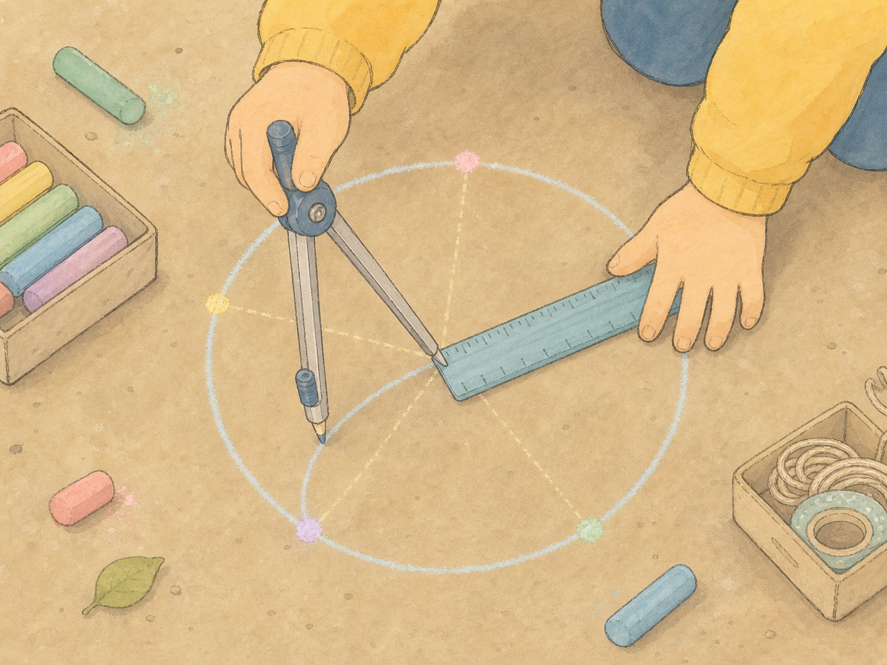
畫一個圓，
圓心 O
畫垂直＋水平直徑，
最上面是頂點 A
找左半徑的
中點 M
以 M 為心、到 A 畫弧，
交橫線於 N（AN＝邊長）
用 AN 當圓規寬度，
沿圓周量出 5 個頂點
隔一個頂點連線，
五芒星完成！ ★
先畫一個圓，再把圓規的腳放到圓上，畫出穿過圓心的圓。
繞一圈畫出6 個圓，就會出現像花朵一樣的圖案，叫做「生命之花」。
畫一個圓，
圓心 O
在圓周上
點一個起點 A
圓規不要改寬度（＝半徑），
從 A 畫弧，交圓於 2 點
用同半徑一直截，
繞一圈剛好6 個點！
隔一個點連線，
畫出兩個三角形
疊起來，
六角星完成！ ✡
| 六角星 ✡ | 五芒星 ★ | |
|---|---|---|
| 幾個角 | 6 個角 | 5 個角 |
| 怎麼畫 | 兩個三角形交疊 | 一筆畫成 |
| 出現在 | 以色列國旗、清真寺花磚 | 很多國家國旗、許願星 |
把一顆星星不斷重複、緊緊排在一起……
就鋪滿了一整面牆，變成清真寺美麗的花磚圖案！
我們會用簡單好懂的方式，引導你設定自己的繪圖規則，例如：重複、對稱、條件變化……慢慢組合出屬於自己的圖形宇宙。
這個想法來自藝術家 Sol LeWitt：他常常只寫下一段「畫圖指令」，再請別人照著畫。
規則：畫 3 個圓，連起交點 →
↑ 一樣的規則，不一樣的作品
老師唸出指令，全班一起照著畫～畫完互相看看，每個人都不一樣！
工具：鉛筆 ✏️ ＋ 圓規 ⭕（戶外用粉筆、棉線當圓和線、紙膠帶當直線）
畫完自己的作品，再和同學交換規則，看看同一套方法，交到不同人手中會變成什麼模樣。
這個過程不只培養創造力，也幫助我們建立邏輯思考與解決問題的能力。
下次看到星星花紋，
記得它都是從一個圓開始的喔 ✦
謝謝大家！ 🕌✨